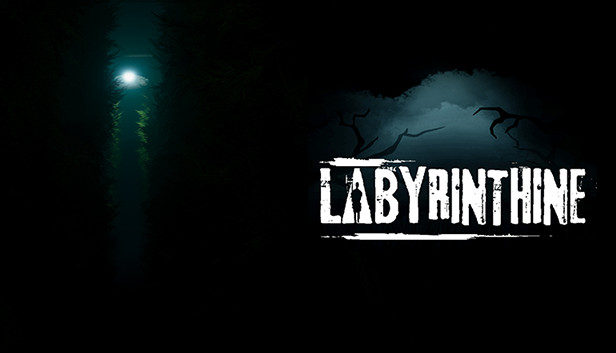

LABYRINTHINE


About this game
Labyrinthine is a cooperative horror game developed and published by Valko
Game Studios. After a successful kickstarter campaign, the game was released
onto steam as an early access title on 28th October 2020.
You play as one of up to four players who have been called to help set up a new
attraction for the town fair. Once inside the maze, you soon discover that a
former employee, Joan, has investigated into a part of the maze previously
boarded off. As you follow her trail, you will quickly realise that the maze has
a much darker past than initially let on.... Solve puzzles, collect items and run
from monsters as you discover the history of the maze and escape with your life.
Labyrinthine is a horror game that can be played solo or co-operatively online
that may just make you never want to enter a maze again. As you navigate the
dark corridors, you will be faced with puzzles, scares and Horrifying monsters
with unique AI’s designed to hunt you down.Together with up to 4 players online
(or even alone if you’re feeling brave!) you must solve the mystery of the
happisburg hedge maze while escaping the clutches of the denizens within.
System Requirment
OS:
Processor:
Memory:
Graphics:
Network:
Storage:
VR Support: